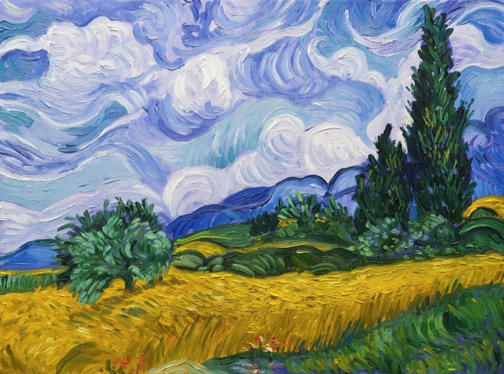
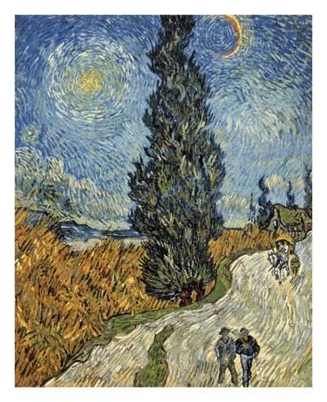
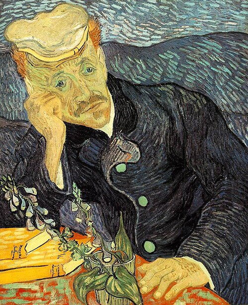
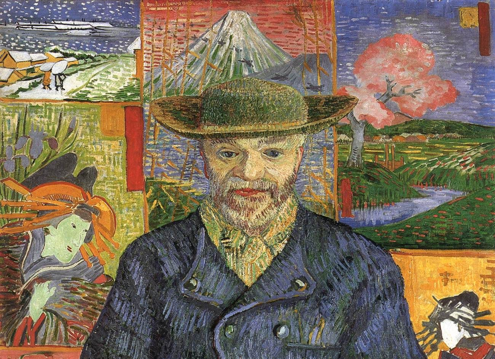
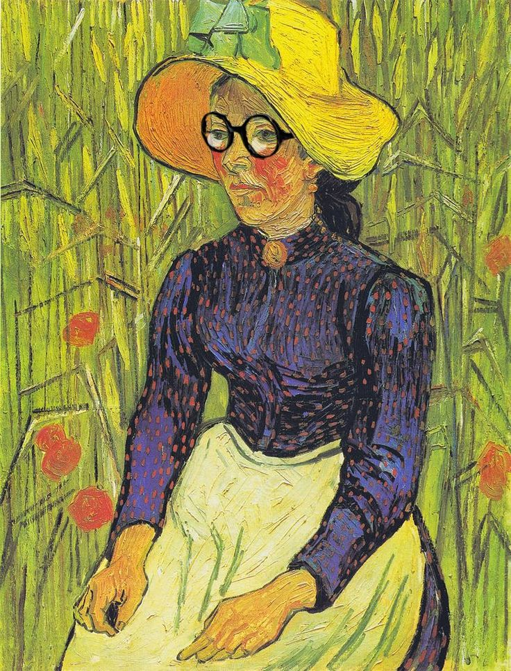
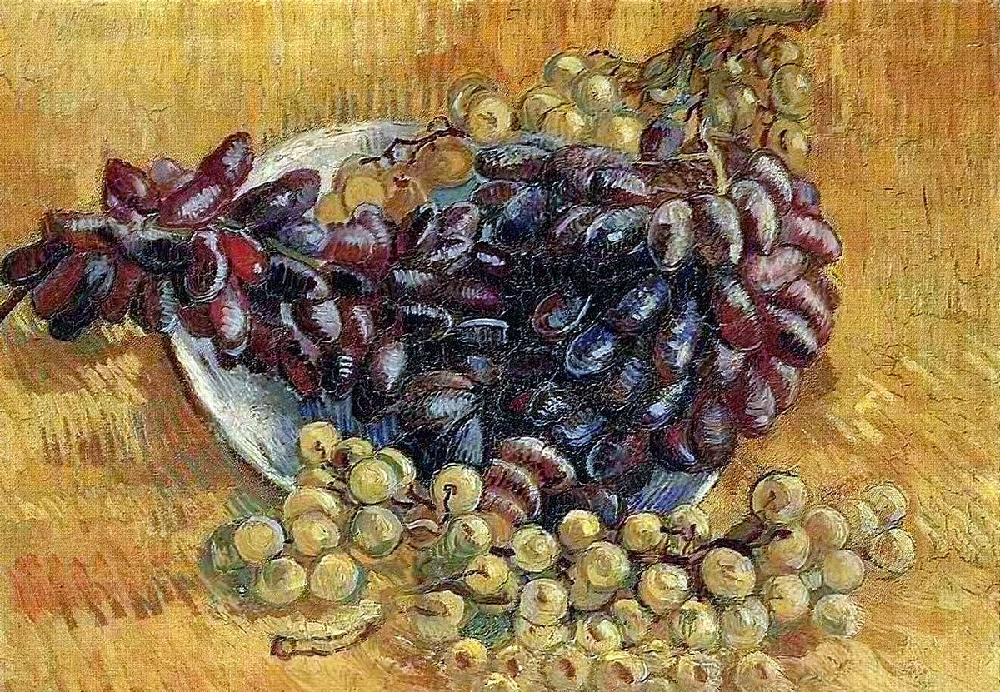
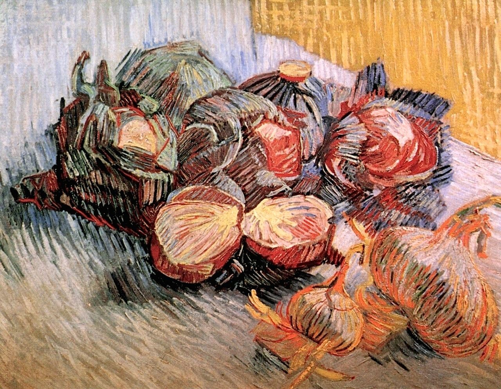

Винсент Ван Гог (1853–1890) создал картины разных жанров: пейзажи, портреты, натюрморты и автопортреты. Ниже представлены некоторые из них.«Пейзаж со снегом» (февраль 1888, Арль). Художник написал почти растаявший снег с помощью коричневых и серых мазков, заполнил участки холста яркими красками.

«Пшеничное поле с кипарисом» (1889).

«Просёлочная дорога в Провансе ночью» (1890).

«Портрет доктора Гаше» (июнь 1890, Овер).

«Портрет папаши Танги» (1887).

«Портрет молодой девушки на фоне хлебного поля» (июнь 1890, Овер).

«Натюрморт с яблоками, грушами, лимонами и виноградом» (1887).

«Натюрморт с красной капустой и луком» (1887).